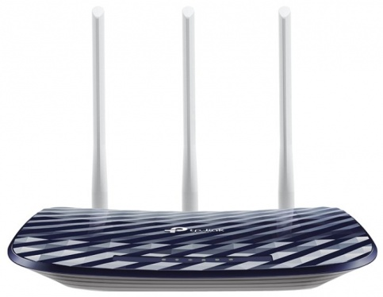

TP-LINK Archer C20 RU (синий)

Описание:
Archer C20 поддерживает следующее поколение беспроводной связи 802.11ac, благодаря чему является идеальным решением для ускорения вашей домашней сети и решения проблемы загруженности канала.
Цена: 1500 рублей
Технические характеристики:
WiFi
| Количество диапазонов |
двухдиапазонный |
| Диапазон 2.4 ГГц |
есть |
| Стандарт Wi-Fi 802.11b |
есть |
| Стандарт Wi-Fi 802.11g |
есть |
| Стандарт Wi-Fi 802.11n, 2.4 ГГц |
есть |
| Скорость 802.11n, 2.4 ГГц |
300 Мбит/с |
| Диапазон 5 ГГц |
есть |
| Стандарт Wi-Fi 802.11a, 5 ГГц |
есть |
| Стандарт Wi-Fi 802.11n, 5 ГГц |
есть |
| Стандарт Wi-Fi 802.11ac, 5 ГГц |
есть |
| Скорость 802.11ac, 5 ГГц |
433 Мбит/с |
Безопасность
| Стандарт WEP |
есть |
| Стандарт WPA |
есть |
| Стандарт WPA2 |
есть |
| Поддержка WPS |
есть |
| Защита от атак Denial-of-service (DoS) |
есть |
| Межсетевой экран (FireWall) |
есть |
| Прочие функции безопасности |
Фильтрация по IP-адресу /MAC-адресу, доменному имени, привязка по IP- и MAC-адресу |
Протоколы и функции
| Поддержка QoS |
есть |
| Поддержка динамического DNS |
есть |
| Поддержка UPnP |
есть |
| Поддержка протокола IPv6 |
есть |
| Поддержка VPN |
есть |
| DHCP-сервер |
есть |
| FTP-сервер |
есть |
| Прочие протоколы и функции |
Поддерживает IPv4, Поддержка Samba (устройство хранения данных) |
Порты
| Кол-во портов WAN |
1 |
| Количество выходных портов 10/100BASE-TX |
4 |
Антенны
| Количество антенн |
3 |
| Тип антенн |
внешние, съемные |
| Внешние антенны |
3 |
Корпус
| Цвет |
синий |
| Размер (ШхВхГ) |
230 х 35 х 144 мм |
| Вес |
260 грамм |
Подробное описание товара:
Скорость до 733 Мбит/с на двух частотах
Archer C20 работает в диапазонах 2,4 ГГц и 5 ГГц, обеспечивая превосходное качество беспроводного соединения, а также возможность выбора между двумя частотами под ваши нужды. Простые задачи, такие как e-mail или просмотр веб-страниц, могут выполняться на 2,4 ГГц со скоростью до 300 Мбит/с, в то время, как ресурсоёмкие задачи, такие как онлайн игры и просмотр HD-видео, могут выполняться на 5 ГГц со скоростью до 433 Мбит/с.
Стабильный сигнал и большое покрытие
Благодаря 3 внешним антеннам вы сможете воспользоваться превосходным качеством Wi-Fi, стабильным сигналом в любом направлении, а также высокой скоростью на более дальних расстояниях. Всё это обеспечит вам увеличенную зону покрытия беспроводной сети и надёжное соединение в любых частях вашего дома или офиса.
Простая настройка
Настройте Archer C20 за несколько минут с помощью понятного веб-интерфейса и мобильного приложения Tether. Tether также позволит вам управлять сетевыми настройками с любого устройства на iOS и Android, включая родительский контроль и контроль доступа.
Все права защищены